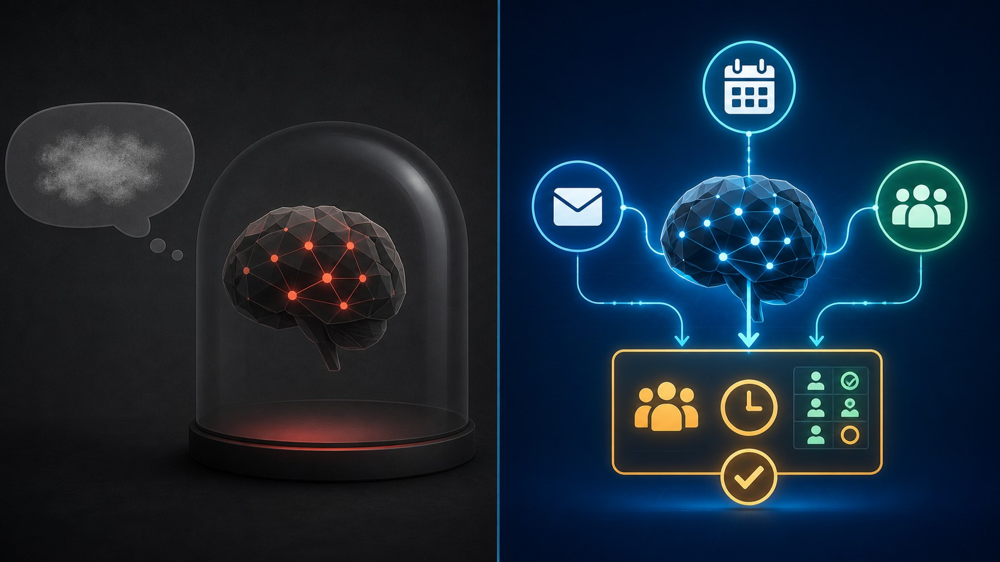

The Prompt Is Just One Ingredient. The Harness Is the Kitchen.
Why the smartest AI in the world is useless without the right tools around it.

Imagine hiring the smartest person alive.
They know everything. They can write, analyze, calculate, create.
But you put them in an empty room. No internet. No documents. No tools. No phone. No calendar.
Then you ask: "Book my meeting for Tuesday."
They'd look at you and say: "I literally can't."
That's how most people use AI today. They talk to the brain — but forget to build the room around it.
What is a harness?
Here's the simplest way I can explain it:
A prompt tells the AI what to do. A harness gives it everything it needs to actually do it.
A harness is the set of tools, data sources, checks, and workflows that surround an AI model. It's the difference between an AI that can only talk and an AI that can actually get things done.
The chef analogy
This is the analogy that makes it click.
A world-class chef is extraordinary. But put that chef in an empty parking lot and ask them to cook dinner — nothing happens.
Now put them in a fully equipped kitchen — knives, pans, a stove, fresh ingredients, a recipe book, a timer — and they produce something incredible.
The chef is the AI model. The kitchen is the harness.
The chef didn't get smarter between those two scenarios. They just got the tools they needed to do their job.
How a harness works
👤 You ask a question
↓
📝 Prompt gives instructions
↓
🔧 Harness activates
(Tools • Memory • Search • Validation)
↓
🤖 AI processes with real support
↓
✅ You get a useful answerThe harness sits between your request and the AI's response. It gives the model access to things it can't do on its own — your calendar, your documents, the web, a calculator, your company's rules.
See the difference

You: "Book my team meeting for Tuesday."
AI: "I'd be happy to help you book a meeting! Here are some general tips for scheduling…"
Polite. Useless. It can't actually do anything.
You: "Book my team meeting for Tuesday."
AI: checks your calendar → finds a free slot → creates the invite → sends it to your team
"Done. I booked your team meeting for Tuesday at 2pm. Invites sent to 4 people."
Same model. Same prompt. But the second one has a harness — tools that let it check calendars, create events, and send emails.
The AI didn't get smarter. It got equipped.
This is how real AI products work
Most AI products you use every day aren't just one prompt. They're systems made of many small pieces working together.
| AI Product | What the harness does |
|---|---|
| Coding assistants | Read your codebase, run tests, suggest fixes |
| Customer support bots | Search help docs, check order status, route to humans |
| Email assistants | Read your inbox, draft replies, check your calendar |
| Travel booking AIs | Search flights, compare prices, hold reservations |
| Document search | Scan thousands of files, return the exact paragraph |
None of these are "just a prompt." Every one has a harness doing the heavy lifting behind the scenes.
Common myths
❌ "Better prompts solve everything."
Sometimes. But if the AI can't access your data, no prompt will fix that.
❌ "Bigger models solve everything."
A bigger brain in an empty room is still stuck in an empty room.
❌ "AI works alone."
The best AI systems are teams — the model plus dozens of tools, checks, and workflows working together.
The takeaway
The smartest AI isn't the one with the biggest brain. It's the one surrounded by the best tools.
A prompt is just one ingredient. The harness is the complete kitchen.
Build the kitchen, and the chef can finally cook.
❓ Try it yourself
Next time an AI gives you a disappointing answer, ask yourself one question:
Was the AI missing information — or was it missing tools?
That question is the beginning of harness engineering. 🧠
Discussion
2 thoughtsUnderstand systems,
not trends.
Join engineers and builders who want first-principles clarity on AI. Free, forever.
No spam. Unsubscribe anytime.
The chef analogy is perfect. I've been trying to explain to my team why our AI chatbot keeps failing — it's not the model, it's the empty kitchen we put it in. Sharing this with everyone.
This finally clicked for me. The "without vs with" comparison is something I see every day — same tools, completely different results depending on what's connected behind the scenes.